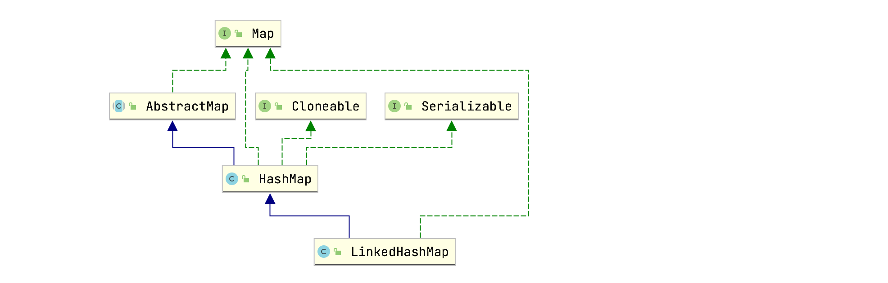
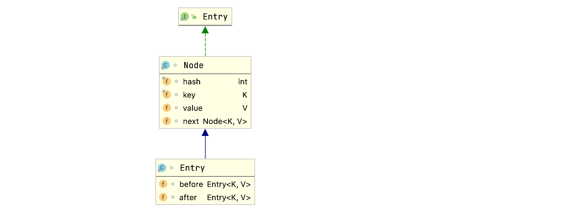
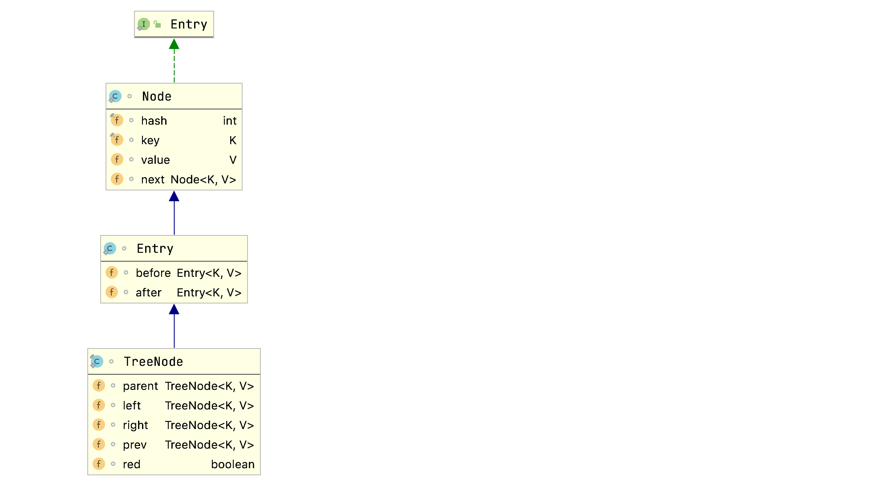

HashMap元素插入是无序的，为了让遍历顺序和插入顺序一致，我们可以使用LinkedHashMap，其内部维护了一个双向链表来存储元素顺序，并且可以通过accessOrder属性控制遍顺序为插入顺序或者为访问顺序。本节将记录LinkedHashMap的内部实现原理，基于JDK1.8，并且用LinkedHashMap实现一个简单的LRU。
类结构
LinkedHashMap类层级关系图：

LinkedHashMap继承自HashMap，大部分方法都是直接使用HashMap的。接着查看成员变量：
1 | // 双向链表的头部节点（最早插入的，年纪最大的节点） |
head和tail使用transient修饰，原因在介绍HashMap源码的时候分析过。
LinkedHashMap继承自HashMap，所以内部存储数据的方式和HashMap一样，使用数组加链表（红黑树）的结构存储数据，LinkedHashMap和HashMap相比，额外的维护了一个双向链表，用于存储节点的顺序。这个双向链表的类型为LinkedHashMap.Entry：
1 | static class Entry<K,V> extends HashMap.Node<K,V> { |
LinkedHashMap.Entry类层级关系图：

LinkedHashMap.Entry继承自HashMap的Node类，新增了before和after属性，用于维护前继和后继节点，以此形成双向链表。
构造函数
LinkedHashMap的构造函数其实没什么特别的，就是调用父类的构造器初始化HashMap的过程，只不过额外多了初始化LinkedHashMap的accessOrder属性的操作：
1 | public LinkedHashMap(int initialCapacity, float loadFactor) { |
简单使用
在分析LinkedHashMap方法实现之前，我们先通过例子感受下LinkedHashMap的特性：
1 | LinkedHashMap<String, Object> map = new LinkedHashMap<>(16, 0.75f, false); |
输出：
1 | {1=a, 6=b, 3=c} |
可以看到元素的输出顺序就是我们插入的顺序。
将accessOrder属性改为true：
1 | {1=a, 6=b, 3=c} |
可以看到，一开始输出{1=a, 6=b, 3=c}。当我们通过get方法访问key为6的键值对后，程序输出{1=a, 3=c, 6=b}。也就是说，当accessOrder属性为true时，元素按访问顺序排列，即最近访问的元素会被移动到双向列表的末尾。所谓的“访问”并不是只有get方法，符合“访问”一词的操作有put、putIfAbsent、get、getOrDefault、compute、computeIfAbsent、computeIfPresent和merge方法。
下面我们通过方法源码的分析就能清楚地知道LinkedHashMap是如何控制元素访问顺序的。
方法解析
put(K key, V value)
LinkedHashMap并没有重写put(K key, V value)方法，直接使用HashMap的put(K key, V value)方法。那么问题就来了，既然LinkedHashMap没有重写put(K key, V value)，那它是如何通过内部的双向链表维护元素顺序的？我们查看put(K key, V value)方法源码就能发现原因（因为put(K key, V value)源码在Java-HashMap底层实现原理一节中已经剖析过，所以下面我们只在和LinkedHashMap功能相关的代码上添加注释）：
1 | public V put(K key, V value) { |
newNode方法用于创建链表节点，LinkedHashMap重写了newNode方法：
1 | Node<K,V> newNode(int hash, K key, V value, Node<K,V> e) { |
可以看到，对于LinkedHashMap实例，put操作内部创建的的节点类型为LinkedHashMap.Entry，除了往HashMap内部table插入数据外，还往LinkedHashMap的双向链表尾部插入了数据。
如果是往红黑树结构插入数据，那么put将调用putTreeVal方法往红黑树里插入节点，putTreeVal方法内部通过newTreeNode方法创建树节点。LinkedHashMap重写了newTreeNode方法：
1 | TreeNode<K,V> newTreeNode(int hash, K key, V value, Node<K,V> next) { |
节点类型为TreeNode，那么这个类型是在哪里定义的呢？其实TreeNode为HashMap里定义的，查看其源码：
1 | static final class TreeNode<K,V> extends LinkedHashMap.Entry<K,V> { |
TreeNode继承自LinkedHashMap.Entry：

所以TreeNode也包含before和after属性，即使插入的节点类型为TreeNode，依旧可以用LinkedHashMap双向链表维护节点顺序。
在put方法中，如果插入的key已经存在的话，还会执行afterNodeAccess操作，该方法在HashMap中为空方法：
1 | void afterNodeAccess(Node<K,V> p) { } |
afterNodeAccess方法顾名思义，就是当节点被访问后执行某些操作。LinkedHashMap重写了这个方法：
1 | void afterNodeAccess(Node<K,V> e) { // move node to last |
所以当accessOrder为true时候，调用LinkedHashMap的put方法，插入相同key值的键值对时，该键值对会被移动到尾部：
1 | LinkedHashMap<String, Object> map = new LinkedHashMap<>(16, 0.75f, true); |
程序输出：
1 | {1=a, 6=b, 3=c} |
在put方法尾部，还调用了afterNodeInsertion方法，方法顾名思义，用于插入节点后执行某些操作，该方法在HashMap中也是空方法：
1 | void afterNodeInsertion(boolean evict) { } |
LinkedHashMap重写了该方法：
1 | // 这里evict为true |
基于这个特性，我们可以通过继承LinkedHashMap的方式重写removeEldestEntry方法，以此实现LRU，下面再做实现。
你可能会问，removeNode删除的是HashMap的table中的节点，那么用于维护节点顺序的双向链表不是也应该删除头部节点吗？为什么上面代码没有看到这部分操作？其实当你查看removeNode方法的源码就能看到这部分操作了：
1 | final Node<K,V> removeNode(int hash, Object key, Object value, |
afterNodeRemoval方法顾名思义，用于节点删除后执行后续操作。该方法在HashMap中为空方法：
1 | void afterNodeRemoval(Node<K,V> p) { } |
LinkedHashMap重写了该方法：
1 | // 改变节点的前继后继引用 |
通过该方法，我们就从LinkedHashMap的双向链表中删除了头部结点。
其实通过put方法我们就已经搞清楚了LinkedHashMap内部是如何通过双向链表维护键值对顺序的，但为了让文章更饱满一点，下面继续分析几个方法源码。
get(Object key)
LinkedHashMap重写了HashMap的get方法：
1 | public V get(Object key) { |
remove(Object key)
LinkedHashMap没有重写remove方法，查看HashMap的remove方法：
1 | public V remove(Object key) { |
迭代器
既然LinkedHashMap内部通过双向链表维护键值对顺序的话，那么我们可以猜测遍历LinkedHashMap实际就是遍历LinkedHashMap维护的双向链表：
查看LinkedHashMap类entrySet方法的实现：
1 | public Set<Map.Entry<K,V>> entrySet() { |
上述代码符合我们的猜测。
LRU简单实现
LRU（Least Recently Used）指的是最近最少使用，是一种缓存淘汰算法，哪个最近不怎么用了就淘汰掉。
我们知道LinkedHashMap内的removeEldestEntry方法固定返回false，并不会执行元素删除操作，所以我们可以通过继承LinkedHashMap，重写removeEldestEntry方法来实现LRU。
假如我们现在有如下需求：
用LinkedHashMap实现缓存，缓存最多只能存储5个元素，当元素个数超过5的时候，删除（淘汰）那些最近最少使用的数据，仅保存热点数据。
新建LRUCache类，继承LinkedHashMap：
1 | public class LRUCache<K, V> extends LinkedHashMap<K, V> { |
程序输出如下：
1 | {2=b, 3=c, 4=d, 5=e, 6=f} |
可以看到最早插入的1=a已经被删除了。
通过LinkedHashMap实现LRU还是挺常见的，比如logback框架的LRUMessageCache：
1 | class LRUMessageCache extends LinkedHashMap<String, Integer> { |